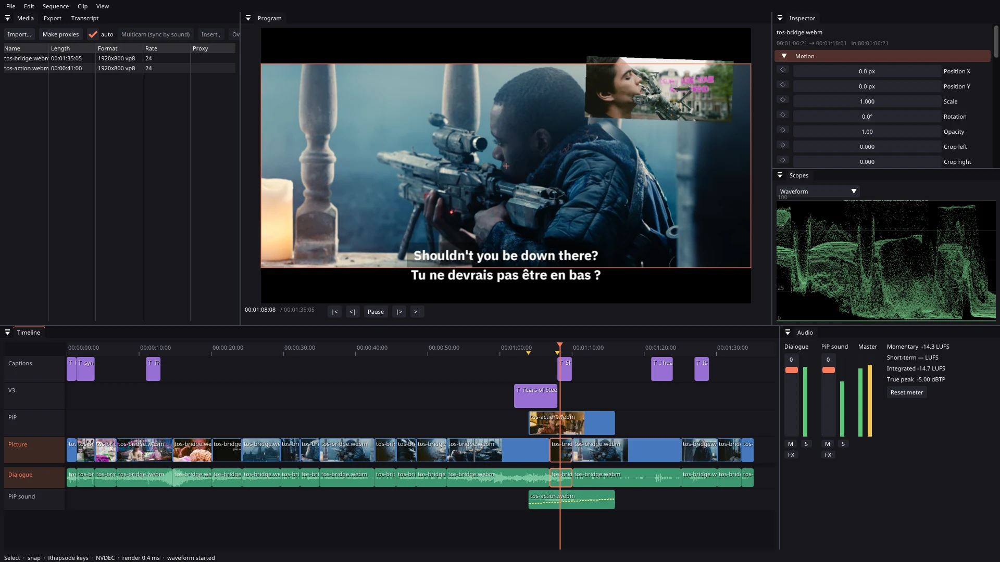
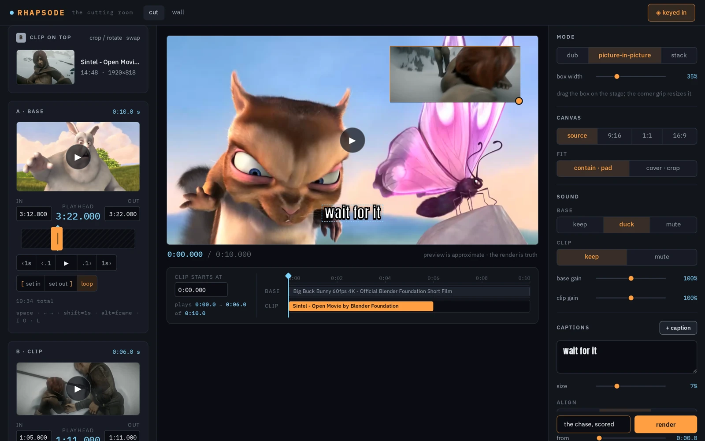
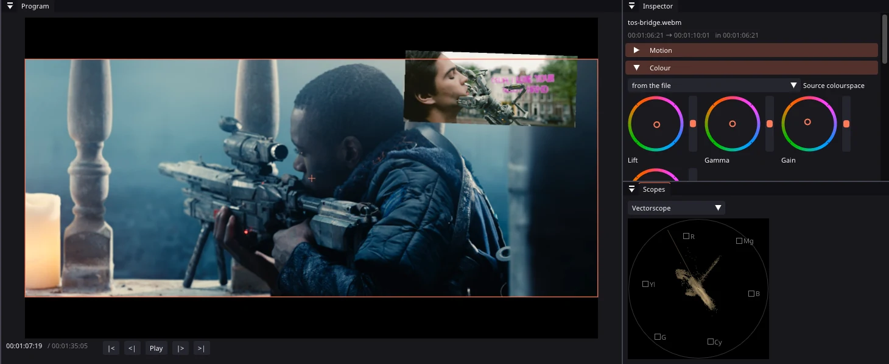
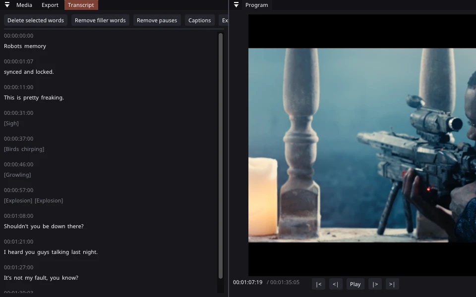

Take a piece of one thing.
Lay it on another.
A self-hosted video editor. Cut seconds from a link in the browser, or edit the whole film in a native editor that plays 4K in real time.

Two pieces, one decision
A base, a clip on top, and how they meet: a dub, a picture-in-picture or a stack, with captions. Works on a phone.
- Any link yt-dlp reads, or an upload. Long videos are fetched as a window around the moment you point at.
- Frame-exact trimming against a proxy cut from the same file the render reads.
- Stems. One video's voice over another's song, split on your GPU.
- Share links that play inline in chat apps, and remix from any render.

The whole film, on your machine
C++ on FFmpeg and Vulkan. Ripple, roll, slip and slide; multicam synced by sound; Premiere's keys or a tighter set. Nothing needs an account or the network, the speech model included.

- Colour. Linear-light compositing, wheels, curves, LUTs, OpenColorIO with ACES 2.0, PQ and HLG, waveform, parade and vectorscope.
- Sound. A keyframed mixer with track EQ, compression and limiting, a BS.1770 loudness meter, normalise, duck, noise reduction and voice isolation.
- Delivery. YouTube, social, AV1, HDR10, ProRes and DNxHR presets on NVENC, a background queue, and smart render that re-encodes only what changed.
- Interchange. OTIO, FCPXML, EDL and Premiere XML in and out. A quick-mode render opens as a Pro project; a Pro export publishes back as a share link.

Delete the words, cut the film
Local transcription with word times. Select sentences and delete them, strip filler words and pauses, then turn the words into captions.
Numbers from one machine
An RTX 4070 SUPER, the GPU idle before each run. Method and raw results in BENCHMARKS.md.
| 60 fps | three tracks of 4K60 HEVC 10-bit, graded and transformed, with no dropped frame in 60 s |
| 86 fps | the same timeline unthrottled; Kdenlive's engine renders it at 15.6 |
| 26 ms | a seek on the editor's proxies (382 ms on long-GOP originals) |
| 141× | real-time speed of transcription on the GPU |
| 27 s | a 19-minute talk transcribed, cut to a quarter, captioned and exported |
| 10 steps | to cut an interview with captions; Premiere's documented workflow takes 20 |
One repository
The web app is one Node package; the editor is a CMake project beside it. Viewing renders is public, creating needs the key in .env.
Web: Node 24, ffmpeg and yt-dlp. Pro: Linux with a Vulkan GPU, SDL 3, FFmpeg 8. NVENC and NVDEC are used when present. MIT.
git clone https://github.com/ZahakJ/rhapsode cd rhapsode && npm ci && cp .env.example .env npm run build && npm start # :8013 cmake -S pro -B pro/build cmake --build pro/build -j pro/build/bin/rhapsode-pro # the editor